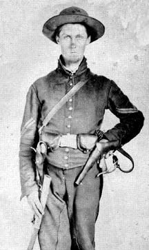

|

NAME: Junius Marion Jones
BORN: 1841
DIED: 1880
ALLEGIANCE: Union
HIGHEST RANK: Corporal
UNIT: 2nd West Virginia Cavalry, Company I
RECORD: Enlisted in the 2nd West Virginia Cavalry,
Company 1, on August 5, 1861, in Mason City, Virginia.
Promoted to corporal on November 8. Captured on September
14, 1863, near Marion, Virginia, and sent to Belle Isle
Prison in Richmond. Transferred to Andersonville Prison in
Georgia on March 21, 1864. Exchanged on December 16.
Mustered out in Annapolis, Maryland, on March 7, 1865.
|
|
The Civil War tore no state apart like it did Virginia.
Citizens from the eastern part of the state sided with the
South and voted to secede in April. Those in the westernmost
counties, however, opposed secession and soon began to
organize their own government. Though West Virginia would
not become a state until June 1863, the men of the
state-to-be immediately began enlisting in the Union army.
Junius Marion Jones joined this rush to arms on August 5,
1861, enlisting in the 2nd West Virginia Cavalry, Company I,
at Mason City. He was promoted to corporal on November 8,
and his regiment soon got its first taste of war,
skirmishing with Rebel guerrillas in the Kanawha River
valley. For the next two years, the 2nd West Virginia
remained in and around the mountains of western Virginia,
taking part in sporadic fighting against Confederates.
On September 4, 1863, Jones joined a cavalry detachment that
had orders to destroy a critical Virginia Sr Tennessee
Railroad bridge near Marion, Virginia, a bridge over which
trains carried salt supplies from Saltville, 15 miles west
of Marion, to the rest of the Confederacy. But the mission
failed, and Jones and many of his compatriots were captured.
Jones spent the next six months at Richmond's Belle Isle
Prison. Then, on March 21, 1864, he was transferred to
Georgia's infamous Andersonville Prison, where he would
remain until he was freed via prisoner exchange at
Charleston, South Carolina, on December 16. Andersonville
took a heavy toll on the formerly robust cavalryman. Gaunt
and weak, he nearly collapsed as he boarded the ship that
took him to Annapolis, Maryland. Back in Union territory, he
spent three months recuperating before being mustered out on
March 7, 1865.
Jones soon moved to southern Illinois, and in 1879, he
traveled to Boone County, Nebraska, where he planted fruit
trees on 60 acres of land. The next spring he went to the
Dakota Territory, where the market for his trees was at its
peak. In August 1880, he sent a postcard to his family back
in Illinois, telling them he was coming home. But Jones
apparently fell victim to Indians or highwaymen and was
never heard from again. His two-wheeled cart was found in
what is now Custer County, South Dakota.
Source: Civil War Times Illustrated
37:3 (June 1998), 88.
|